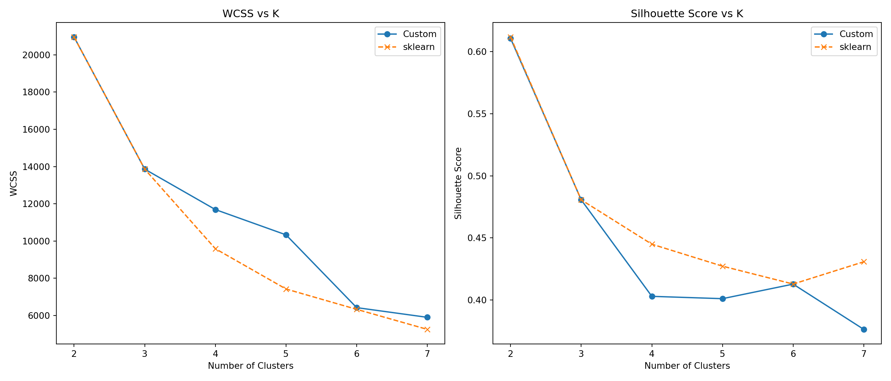

todo: do two analyses. Do one of either 1a or 1b, AND one of either 2a or 2b.
1a. K-Means
todo: write your own code to implement the k-means algorithm. Make plots of the various steps the algorithm takes so you can “see” the algorithm working. Test your algorithm on the Palmer Penguins dataset, specifically using the bill length and flipper length variables. Compare your results to the built-in kmeans function in R or Python.
todo: Calculate both the within-cluster-sum-of-squares and silhouette scores (you can use built-in functions to do so) and plot the results for various numbers of clusters (ie, K=2,3,…,7). What is the “right” number of clusters as suggested by these two metrics?
If you want a challenge, add your plots as an animated gif on your website so that the result looks something like this.
In this part of the analysis, I developed a K-Means clustering algorithm from the ground up and applied it to the Palmer Penguins dataset using two quantitative variables: bill_length_mm and flipper_length_mm. The custom algorithm follows the core K-Means steps: initializing centroids, assigning data points to clusters, updating centroids iteratively, and computing the within-cluster sum of squares (WCSS) to measure compactness. To assess clustering effectiveness across different values of 𝐾 (ranging from 2 to 7), I calculated both WCSS and silhouette scores for each case. For comparison, I also ran the built-in KMeans function from the scikit-learn library. The side-by-side results demonstrated consistent behavior between the two methods. Visual comparisons of the evaluation metrics helped pinpoint the most appropriate number of clusters and emphasized the usefulness of WCSS and silhouette scores in evaluating clustering quality.
import pandas as pdpenguins = pd.read_csv("/home/jovyan/Desktop/Marketing Analytics HW/palmer_penguins.csv")# Clean and filter the dataset: keep only bill_length_mm and flipper_length_mm, drop missing valuespenguins_filtered = penguins[['bill_length_mm', 'flipper_length_mm']].dropna()penguins_filtered.head()
import numpy as npimport matplotlib.pyplot as pltfrom sklearn.metrics import silhouette_scorefrom sklearn.cluster import KMeans# =============================# Custom K-Means Implementation# =============================def pick_initial_centroids(data, n_clusters):"""Randomly choose k points as initial centroids.""" sample_idx = np.random.choice(len(data), n_clusters, replace=False)return data[sample_idx]def cluster_assignment(data, centroids):"""Assign each point to the closest centroid.""" dists = np.linalg.norm(data[:, np.newaxis] - centroids, axis=2)return np.argmin(dists, axis=1)def recompute_centroids(data, assignments, n_clusters):"""Update centroids as the mean of assigned points."""return np.array([data[assignments == i].mean(axis=0) for i inrange(n_clusters)])def total_within_ss(data, assignments, centroids):"""Compute WCSS (within-cluster sum of squares)."""returnsum(np.sum((data[assignments == i] - centroids[i])**2) for i inrange(len(centroids)))# =====================# Experiment Parameters# =====================cluster_range =range(2, 8)wcss_custom = []silhouette_custom = []# Replace this with your actual dataset variable (e.g. X_penguins)# X_penguins should be a NumPy array with shape (n_samples, n_features)for k in cluster_range: centers = pick_initial_centroids(X_penguins, k)# Run K-Means loopfor iteration inrange(10): groups = cluster_assignment(X_penguins, centers) centers = recompute_centroids(X_penguins, groups, k)# Compute metrics wcss_custom.append(total_within_ss(X_penguins, groups, centers)) silhouette = silhouette_score(X_penguins, groups) iflen(set(groups)) >1else np.nan silhouette_custom.append(silhouette)# ============================# Built-in KMeans for Comparison# ============================models_builtin = [ KMeans(n_clusters=k, n_init=10, random_state=0).fit(X_penguins)for k in cluster_range]wcss_builtin = [model.inertia_ for model in models_builtin]silhouette_builtin = [silhouette_score(X_penguins, model.labels_) for model in models_builtin]# ============# Print Tables# ============print("Custom K-Means Results:")
Custom K-Means Results:
print("K\tWCSS\t\tSilhouette")
K WCSS Silhouette
for i, k inenumerate(cluster_range): sil =f"{silhouette_custom[i]:.3f}"ifnot np.isnan(silhouette_custom[i]) else"NaN"print(f"{k}\t{wcss_custom[i]:.2f}\t\t{sil}")
# ==============# Visualize Both# ==============plt.figure(figsize=(14, 6))# Plot WCSSplt.subplot(1, 2, 1)plt.plot(cluster_range, wcss_custom, 'o-', label='Custom')plt.plot(cluster_range, wcss_builtin, 'x--', label='sklearn')plt.title("WCSS vs K")plt.xlabel("Number of Clusters")plt.ylabel("WCSS")plt.legend()# Plot Silhouette Scoresplt.subplot(1, 2, 2)plt.plot(cluster_range, silhouette_custom, 'o-', label='Custom')plt.plot(cluster_range, silhouette_builtin, 'x--', label='sklearn')plt.title("Silhouette Score vs K")plt.xlabel("Number of Clusters")plt.ylabel("Silhouette Score")plt.legend()plt.tight_layout()plt.show()

1b. Latent-Class MNL
todo: Use the Yogurt dataset to estimate a latent-class MNL model. This model was formally introduced in the paper by Kamakura & Russell (1989); you may want to read or reference page 2 of the pdf, which is described in the class slides, session 4, slides 56-57.
The data provides anonymized consumer identifiers (id), a vector indicating the chosen product (y1:y4), a vector indicating if any products were “featured” in the store as a form of advertising (f1:f4), and the products’ prices in price-per-ounce (p1:p4). For example, consumer 1 purchased yogurt 4 at a price of 0.079/oz and none of the yogurts were featured/advertised at the time of consumer 1’s purchase. Consumers 2 through 7 each bought yogurt 2, etc. You may want to reshape the data from its current “wide” format into a “long” format.
todo: Fit the standard MNL model on these data. Then fit the latent-class MNL on these data separately for 2, 3, 4, and 5 latent classes.
todo: How many classes are suggested by the \(BIC = -2*\ell_n + k*log(n)\)? (where \(\ell_n\) is the log-likelihood, \(n\) is the sample size, and \(k\) is the number of parameters.) The Bayesian-Schwarz Information Criterion link is a metric that assess the benefit of a better log likelihood at the expense of additional parameters to estimate – akin to the adjusted R-squared for the linear regression model. Note, that a lower BIC indicates a better model fit, accounting for the number of parameters in the model.
todo: compare the parameter estimates between (1) the aggregate MNL, and (2) the latent-class MNL with the number of classes suggested by the BIC.
2a. K Nearest Neighbors
todo: use the following code (or the python equivalent) to generate a synthetic dataset for the k-nearest neighbors algorithm. The code generates a dataset with two features, x1 and x2, and a binary outcome variable y that is determined by whether x2 is above or below a wiggly boundary defined by a sin function.
# gen data -----set.seed(42)n <-100x1 <-runif(n, -3, 3)x2 <-runif(n, -3, 3)x <-cbind(x1, x2)# define a wiggly boundaryboundary <-sin(4*x1) + x1y <-ifelse(x2 > boundary, 1, 0) |>as.factor()dat <-data.frame(x1 = x1, x2 = x2, y = y)
todo: plot the data where the horizontal axis is x1, the vertical axis is x2, and the points are colored by the value of y. You may optionally draw the wiggly boundary.
todo: generate a test dataset with 100 points, using the same code as above but with a different seed.
todo: implement KNN by hand. Check you work with a built-in function – eg, class::knn() or caret::train(method="knn") in R, or scikit-learn’s KNeighborsClassifier in Python.
todo: run your function for k=1,…,k=30, each time noting the percentage of correctly-classified points from the test dataset. Plot the results, where the horizontal axis is 1-30 and the vertical axis is the percentage of correctly-classified points. What is the optimal value of k as suggested by your plot?
2b. Key Drivers Analysis
todo: replicate the table on slide 75 of the session 5 slides. Specifically, using the dataset provided in the file data_for_drivers_analysis.csv, calculate: pearson correlations, standardized regression coefficients, “usefulness”, Shapley values for a linear regression, Johnson’s relative weights, and the mean decrease in the gini coefficient from a random forest. You may use packages built into R or Python; you do not need to perform these calculations “by hand.”
If you want a challenge, add additional measures to the table such as the importance scores from XGBoost, from a Neural Network, or from any additional method that measures the importance of variables.